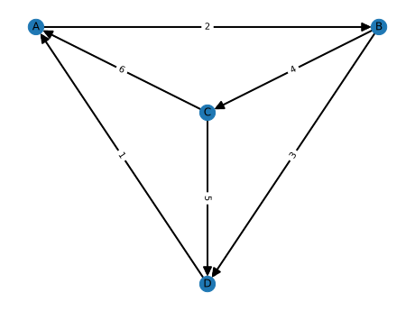

Graph Theory
The most basic equation to any chemical engineer is the following:
This is simply a reformulation of the conservation of mass. For this illustrative example, we will make this equation even simpler, removing the accumulation, generation, and consumption terms. This relies on the following assumptions:
- No reactions take place
- The fluid we are working with is incompressible, and the pipes/reactors are completely filled.
We can consider a very simple plant network. Two units with a recycle loop, connected by four streams.

This can be represented as a graph:

let us make an example layout, with units A, B, and C as nodes, and streams 1 through 4 as edges. We can do this with networkx.
# make simple example problem
g = nx.DiGraph()
g.add_nodes_from(["A", "B", "C", "D"])
g.add_edges_from([
("A", "B"),
("B", "C"),
("C", "A"),
("B", "D"),
("C", "D"),
("D", "A"),
]
)

The work done back in 1988 by Kretsovalis and Mah1 introduces an algorithm called GENOBS to determine the observability for hydraulic balances and component balances using graph theory. Their algorithm requires creating the following graphs, which we will label \(G_m\), \(G_{m,x}\), \(G^m\), \(G_{i}^{m}\), and \(G^i\).

References
-
A. Kretsovalis and R. S. H. Mah, “Observability and redundancy classification in generalized process networks—II. Algorithms,” Computers & Chemical Engineering, vol. 12, no. 7, pp. 689–703, Jul. 1988, doi: 10.1016/0098-1354(88)80008-5. ↩